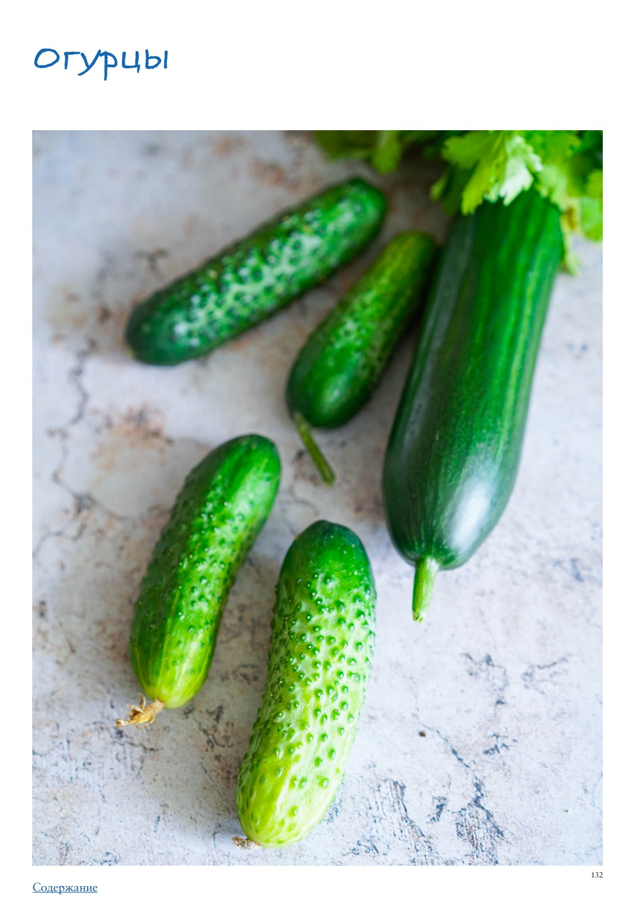

Огурцы
Если вас разбудить среди ночи и спросить: «Назови, не раздумывая, пару овощей», вы наверняка ответите: «Огурцы, помидоры…», а дальше уже возможны вариации. Огурцы — это первое, что приходит в голову при слове «овощи», что-то настолько понятное, привычное и простое, что, казалось бы, мы все о них знаем. Так ли это? Давайте проверим. Возможно, в этой статье вы найдете то, что станет для вас открытием. Огурцы прекрасны тем, что у них легкий, нежный и практически нейтральный вкус, а потому они могут сочетаться с практически любыми другими овощами и дополнительными вкусами. Это идеальная основа овощного салата за неимением салатных листьев (или вместе с ними), непременный ингредиент летних холодных супов и освежающих соусов типа индийской райты или греческого дзадзики. В последнее время только ленивый не готовит очень простое и вкусное блюдо в азиатском стиле — битые огурцы. В Азии вообще ценят этот овощ, используют его во множестве блюд, дополняя огурцами мясо, птицу и рыбу. Вы удивитесь, но свежие огурцы можно жарить и тушить! В соленом и маринованном виде огурцы становятся сами по себе отличной закуской, а еще прекрасно дополняют уже другие по стилю салаты (зимний оливье, например), горячие супы (рассольник, солянка), а также бургеры, хот-доги и сэндвичи (в Великобритании сэндвичи с огурцами, правда, свежими, — классическая закуска к послеполуденному чаю). У огурцов бесчисленное количество сортов, но можно выделить несколько основных типов, которые различаются по размеру и фактуре. Длинные гладкие (по-английски они называются «телеграфными») с суженным темным кончиком у основания, темно-зеленой и очень нежной кожицей с выраженными продольными бороздками. Обычно их продают запаянными индивидуально в плотную пленку как раз из-за очень деликатной кожицы, которую легко повредить при транспортировке. У них очень мелкие семена. Среднеплодные гладкие («английские», «персидские»), как понятно из названия, короче, чем длинноплодные. Они равной толщины по всей длине, без сужения у основания, а кожица немного светлее, чем у длинноплодных, хотя тоже довольно нежная. Среднеплодные пупырчатые — есть разные, в России же повсеместно подаются огурцы сорта «Атлет» характерной формы, расширяющейся «бочонком» ближе к кончику и сильно сужающейся у основания (где подоножка), с довольно светлой кожицей. Эти огурцы просто чемпионы по хрусту! А вот темно-зеленые среднеплодные огурцы ровной формы, как правило, плохо хрустят. Короткоплодные гладкие (по-английски Kirby) отличаются светлой и жесткой кожицей, поэтому их чаще консервируют, а если используют в свежем виде, обязательно очищают. Короткоплодные пупырчатые — чем они меньше, тем нежнее и вкуснее, и тем сильнее хрустят. Они идеальны как для того, чтобы их есть в свежем виде, так и для консервирования. Самые маленькие огурчики этого типа (от 4 до 8 см длиной) называют корнишонами. Существуют и экзотические виды огурцов, например «змеиный», с полосатой кожицей и закрученной формой, и «лимонный», который иначе называют «хрустальным яблоком»: по форме совершенно круглый, с жесткой светло-желтой кожицей и крупными семенами внутри (ни лимоном, ни яблоком он не пахнет, названия даны чисто из-за внешнего сходства). Что примечательно, вкус практически у всех огурцов, даже необычных на вид, примерно одинаковый, как и легкий огуречный аромат. Сезон огурцов длится все лето, но сейчас эти овощи во множестве разновидностей доступны в продаже круглый год.
Выбирайте крепкие, твердые, не вялые огурцы без желтизны, пятен и трещин. Последнее актуально, так как огурцы на 96% состоят из воды, и если через трещину внутрь попадут болезнетворные микроорганизмы, они быстро распространятся по всему плоду. Если перед вами огурцы одного сорта, но разных размеров или толщины, лучше выбирать более мелкие и узкие — в них меньше семян, которые еще не развиты, а потому не жесткие, и кожица у них более нежная. Выбирая пупырчатые огурцы, обратите внимание на пупырышки — чем они более колючие, тем свежее огурчики. Для тех, кто живет в Германии: такие огурцы можно найти на рынках, куда их привозят из Польши. Имейте в виду, что длинные огурцы часто для лучшей сохранности покрывают слоем воска, поэтому перед использованием их в свежем виде лучше снять с них кожицу овощечисткой. Кстати, длинные гладкие огурцы, которые продаются в Германии в био-магазинах, очень даже неплохие. Я постоянно ем их зимой, но обязательно очищаю от кожицы, потому что она плотная и не очень вкусная. А вкус самого огурца отлично раскроется, если перед добавлением в салат хорошо его посолить. У огурцов, выращенных с применением нитратов, внутри видна заметная желтизна — их лучше избегать. Также желтизной может отдавать мякоть перезрелых огурцов. К сожалению, невозможно угадать, будет ли огурец горчить, если вы покупаете его на рынке, и он был выращен в открытом грунте. Понять это можно только методом пробы. Огурцы начинают горчить, если в процессе формирования плода было недостаточно влаги, стояла сильная жара или случались резкие перепады температуры. У тепличных огурцов такое исключается, потому что полив и температура задаются автоматически.
Свежие огурцы хорошо хранятся в отделении для овощей холодильника до 5–6 дней.
Огурцы с жесткой или покрытой воском кожицей перед использованием лучше очистить овощечисткой. Если вы используете длинноплодные или среднеплодные огурцы в салатах, лучше удалить из них водянистую сердцевину с семенами. Разрежьте огурец вдоль пополам и выскребите сердцевину чайной ложкой. Свежие огурцы можно добавлять в салаты нарезанными брусочками, кружочками, половинками кружочков или кубиками. Для использования в бутербродах нарезать как можно более тонкими кружочками, а для холодных соусов — натереть на крупной терке (соленые и маринованные огурцы для соусов обычно очень мелко рубят). Эффектный способ использования свежих огурцов в салатах — нарезать их тонкими ленточками с помощью мандолины или овощечистки. Чтобы нарезать огурцы ровными кубиками, разрежьте очищенные от семян половинки на продольные брусочки нужной толщины, затем нарежьте поперек.
Соленые огурцы для супов лучше всего резать тонкой соломкой: сначала вдоль на максимально тонкие пластинки, затем поперек.
Для использования в свежем виде достаточно просто нарезать (или натереть) огурцы так, как указано в рецепте. Форма нарезки важна, так как она должна соответствовать правильной текстуре блюда. Свежие и соленые огурцы можно жарить и тушить в составе овощных рагу. Соленые огурцы используются для варки супов, в этом случае их лучше приготовить отдельно (потушить под крышкой до мягкости с небольшим количеством воды) и добавить в суп за несколько минут до окончания варки.
Свежие огурцы отлично сочетаются с авокадо, помидорами, морковью, стеблями сельдерея, любой ароматной зеленью (особенно с укропом и мятой), лимоном, чесноком, кисломолочными продуктами (йогуртом, кефиром, фетой, козьим сыром, брынзой), белой и красной рыбой, моллюсками, яйцами, каперсами. Соленые и маринованные огурцы сочетаются с жирным мясом, паштетами, колбасами. Необычные сочетания: анис, дыня, арбуз, клубника, роза (в джине Hendrick’s Gin).